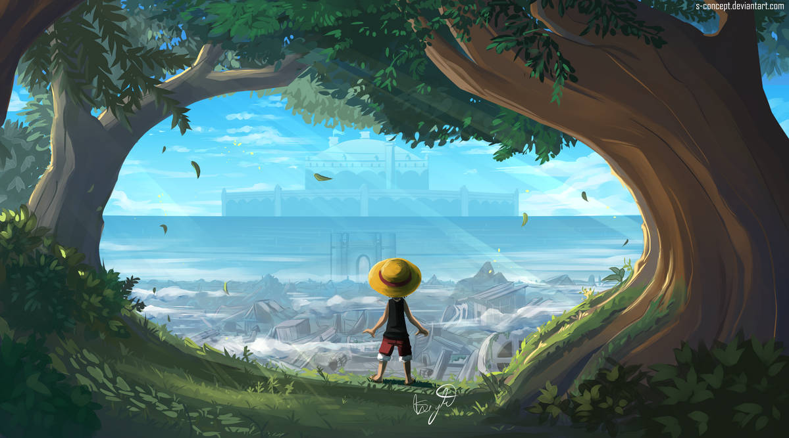
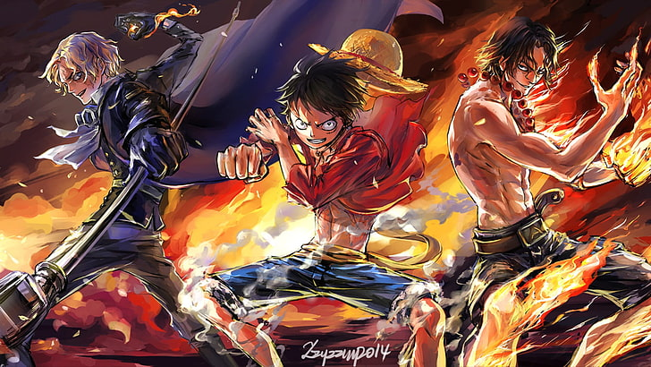

Danh sách chap
Chap 1
Chap 2
Chap 3
Chap 4
Lời mở đầu
Cha không còn trên thế gian này nữa.
Ông đã bị xử tử dưới tay của hải quân trước khi con của mình kịp chào đời.
Để lại người phụ nữ đã trở thành mẹ và đứa trẻ trong bụng.
Chuyện về người cha ấy là một bí mật.
Để bảo vệ đứa con trong bụng, người phụ nữ đã giấu mình ở quê hương mà cô ấy sinh ra.
Và một sinh linh mới đã lặng lẽ chào đời mà không ai hay biết.
Biển Nam – Đảo Baterilla.
Phải chăng đó là trò đùa của số phận.
Tại hòn đảo đó, người phụ nữ đã sinh ra đứa trẻ kế thừa dòng máu của vua hải tặc.
Chap 1
Do đã chệch khỏi cuộc đời đã được lắp đặt sẵn đường ray nên tôi quyết định ra biển. Bởi vì tôi đã nghĩ đại dương xanh thẳm trải dài đến vô tận kia chính là thế giới mà mình thật sự sinh ra. Thế giới của cuộc phiêu lưu mà tôi luôn khao khát từ khi còn thơ ấu. Thế giới của giấc mơ mà tôi chỉ có thể ngắm nhìn thông qua quyển sách trên tay. Tôi của hiện tại đã ở thế giới đó. Hoang đảo có một cây dừa. Ánh mặt trời chói chang. Bãi cát trắng. Bao tử trống rỗng. Tất cả đều là thật. Chỉ có âm thanh của con sóng êm dịu và giọng nói của hải đảo đánh dấu từng giờ yên ả. Tôi có một ước mơ từ khi còn nhỏ rằng một ngày nào đó tôi sẽ thử viết lên một cuốn Phiêu lưu ký. Nếu làm thì tôi dự định mình sẽ viết một cuốn sách giống như cuốn "Brag Men". Đó là cuốn sách yêu thích nhất của tôi. Cuốn sách đã tóm tắt sổ nhật ký mà Louis Arnote, một nhà thám hiểm cổ xưa, đã viết. Chương về "Litte Garden", hòn đảo mà người khổng lồ sinh sống, rất nổi tiếng. Những câu chuyện còn lại mọi người đều cho rằng đó là bịa đặt, những tên người lớn xung quanh tôi đều là lũ ngốc. Tuy nhiên, tôi đã nghĩ "Tại sao họ lại trách mắng như vậy?" với một tâm hồn trẻ thơ. Tôi muốn kiểm tra và xác nhận bằng chính mắt của mình chứ không phải thông qua ý kiến của ai đó. Tôi cũng không có ý định mắng mỏ cho đến khi được chứng kiến tận mắt. Suy nghĩ đó đến bây giờ vẫn không thay đổi. Ngay cả khi hòn đảo mà tôi đã trôi dạt tới là hòn đảo gần với thiên thường nhất. Biển đông – một hòn đảo vô cùng xinh đẹp – Đảo Sixis. Hoang đảo này sau khi bước chân vào thì cuối cùng dù có chết cũng không thể thoát ra được. Trước tiên, tôi nhìn chằm chằm vào vùng nước cạn lấp lánh màu xanh ngọc bảo kia, đối diện với nó là một dòng hải lưu đặc biệt. Nó kéo những gì bén mảng tới gần vào hòn đảo. Cứ như là cúc của đại dương vậy. Nghĩa là những người đi vào đảo bằng cách này, tất cả đành phải miễn cưỡng tận hưởng kì nghỉ cuối cùng của cuộc đời mình. Phù, tôi thở dài một tiếng và ngồi xuống dưới bóng cây dừa. Bên cạnh tôi là bộ hài cốt của vị khách trước. Dường như người đó là hải tặc. Bàn tay không còn lớp thịt kia đang nắm chặt lấy một khẩu súng đã gỉ sét. Vũ khí cũng như những viên đá quý không được mang sang thế giới bên kia. Thứ còn sót lại sau khi chết chỉ là những khúc xương trắng. "Chúng ta gặp nạn cùng nhau rồi..." Không hiểu sao tôi lại thì thầm như thế. Có vẻ như là vì nếu không làm như vậy, tôi sẽ quên bẵng giọng nói của mình. Hơn nữa, sau khi suy nghĩ đến việc vẻ ngoài của mình rồi cũng sẽ trở nên như thế kia trong tương lai gần, tôi liền nói một lời cảm ơn đến người đã khuất... "Mình thật ngu xuẩn..." Tôi nhắm mắt lại và tựa vào cây dừa. Trong vô thức, tôi đã suy nghĩ trên cơ sở rằng mình sẽ không được cứu nữa. Dấu hiệu đó thật không tốt chút nào. "Ít nhất cũng phải xây một ngôi mộ chứ. Tôi sẽ giúp một tay vậy" "Mộ à... phải rồi... làm thôi nào..." Bộ hài cốt cũng như cái đầu lâu bỏ lăn lóc ngoài trời kia thật buồn cười. Tôi sẽ tưởng niệm và xây mộ cho nó. Tôi không biết người đó là ai nhưng tôi sẽ nói những lời tốt đẹp. "Ai đó!?" Tôi ngạc nhiên mở mắt và nhanh chóng bật dậy. Chắc chắn là không có bất cứ ai trên hoang đảo này, vậy mà tôi cảm thấy như mình vừa có một cuộc trò chuyện... Thế thì... Xoạt, có âm thanh dẫm lên cát. Sau đó, một gã thanh niên đã đứng trước mắt tôi. "A, hân hạnh được gặp anh" Gã đó ngay thẳng cúi chào và hai mắt chúng tôi chạm nhau. Lời chào hỏi đó không thích hợp trên hoang đảo này chút nào. "Tên của tôi là Ace. Tôi đang đi dạo trên bờ biển này. Rất vui được gặp anh" Gã đó tự giới thiệu. Cái mũ màu cam của hắn thật chói mắt. Khi tôi vừa nhíu mắt lại và ngước lên thì hắn đã ngồi xuống. Tôi nhận thấy tầm mắt của chúng tôi ngang nhau. Tên trẻ tuổi đó còn có những đốm tàn nhang trên mặt. Có lẽ hắn trạc tuổi tôi. Tôi cảm thấy dường như cuốn phiêu lưu ký và âm thanh của những con sóng rất thích hợp với cơ thể rắn chắc của hắn. Đó là cuộc gặp gỡ đầu tiên của tôi với Portgas D.Ace. Tôi bất ngờ đến nỗi không nói thành lời. Không thể tin là tôi còn có thể gặp được người khác ở đây. Từ giây phút nhìn lướt qua bóng dáng hắn, trong não tôi đã nổi lên hai chữ "cứu viện". Gã đó tự xưng mình là Ace – Không, vị cứu tinh đó đã mở miệng nói. "Xin lỗi vì sự đường đột này, nhưng thuyền của tôi đã hỏng mất rồi. Cậu làm ơn giúp tôi với" "Cậu cũng chung cảnh ngộ với tôi hả!" Aaaaaaaaaaaaaa, tôi ôm đầu hét lên. Đại dương rộng lớn thế này vậy mà chúng tôi lại trôi dạt lên cùng một hoang đảo và cùng một thời điểm sao? Có bao nhiêu xác xuất cho chuyện đó vậy? Tôi yếu ớt trả lời. "... Thuyền của tôi cũng hỏng bởi cơn bão hôm trước rồi. Hầu hết hàng hóa cùng con thuyền đã tặng cho Davy Jones cả. Vì trong cơn bão đột nhiên tôi muốn làm việc tốt ấy mà" Môi tôi đã trở nên khô khốc và rỉ máu. Đã lâu rồi tôi mới nói chuyện với người khác. Davy Jones là một tên hải tặc cổ xưa. Truyền thuyết nói rằng hắn đã bị ác quỷ nguyền rủa và đến tận bây giờ hắn vẫn đang sống dưới đáy biển. Nói cách khác nghĩa là những thứ chìm xuống biển, thuyền và kho báu đều trở thành đồ của hắn. "Ra là vậy... Xem ra chúng ta gặp nạn cùng nhau rồi..." Gã mặt tàn nhang nói vậy và cười sảng khoái. So với những người trôi dạt trên biển khác thì hắn ta trông khá ngớ ngẩn. Tôi đã cảm thấy tức giận trước bộ dạng đó của Ace. Ở hoàn cảnh này mà hắn còn tươi cười được nữa. Không, chuyện đó cũng dễ hiểu thôi. Hắn có lẽ không biết gì về sự đáng sợ của hòn đảo này. Hắn là kẻ mới trôi dạt vào đây. Kẻ mới trôi dạt là gì nhỉ. Tư duy của tôi dần trở nên không hiểu nổi, chắc do đói và khát chăng. "Tôi... dạt vào đây được 3 ngày rồi..." Khẽ khàng nhưng chắc nịch, tôi lầm bầm nói. Sao nào, tôi đã sống sót suốt 3 ngày rồi đó. Cậu có thể bắt chước không. Tôi thốt ra câu trên, lẫn trong đó là cảm giác như đang ưỡn ngực tự mãn. "Còn tôi thì 6 ngày rồi. Tôi thắng" "Ể Ể Ể Ể Ể !?" Tôi thốt lên kinh ngạc. Hắn còn thảm hơn tôi nữa. "Cơ mà, quan trọng hơn là... Tôi đang làm một cái bè, nhưng mãi mà chẳng xong. Cậu có muốn hợp sức với tôi không?" Ace đưa ra đề nghị. Bởi đang lúc loay hoay không biết phải làm thế nào thì cậu ta phát hiện ra tôi. Hai người cùng hợp sức đóng thuyền... Nhìn sơ qua thì đó là một lời đề nghị hết sức hấp dẫn. Tuy nhiên đây chính là việc đặt niềm tin và vận mệnh của mình vào một kẻ không rõ lai lịch hơn nữa lại còn mới gặp qua lần đầu. Nơi đây là hoang đảo. Mọi thứ đều có giới hạn. Chỉ có mình bản thân thôi cũng đã khó khăn rồi nói gì đến hai gã đàn ông. Đúng là lố bịch mà. Con người là loài phản bội. Huống chi là trên hoang đảo, nơi chỉ có sự sống hoặc cái chết. Bên cạnh đó còn chẳng có một ai chứng kiến. Trong hoàn cảnh như thế, tôi thực sự có thể tin tưởng kẻ trước mặt mình sao? Do đó, tôi chẳng muốn hợp tác với hắn ta chút nào. Tôi cũng chẳng cần đồng đội gì hết. Từ lúc ra biển, tôi đã quyết tâm sống một mình và không dựa dẫm vào bất cứ ai rồi. Làm như thế, tôi cũng chẳng phải lo đến việc bị kẻ khác phản bội. Ngẫm lại thì, trong khoảng khắc lần đầu tiên nhìn thấy bóng dáng Ace và được hắn bắt chuyện, bên trong tôi đã dấy lên một chút hy vọng. Thảm hại làm sao. Đâu đó nơi đáy lòng tôi vẫn còn mong muốn được người khác chở che. Đồng đội chỉ là thứ khiến nỗi cô đơn, mà khi ở một mình chẳng cảm thấy, trở nên sâu đậm hơn mà thôi. "Ừ nhỉ, tôi vẫn chưa hỏi tên của cậu" Mặc dù mới gặp nhau được vài phút nhưng Ace đã rất cởi mở. Thật không thể chịu nổi. Từ xưa tôi đã rất ghét việc phải xưng tên và bị hỏi tên một cách suồng sã. "Tôi không nói tên mình cho cậu biết đâu" Tôi thì thầm. Không có lý do gì để tôi nói cho đối phương biết tên của mình trong lần đầu gặp mặt cả. Từ ngày giong buồm ra khơi, tôi đã vứt bỏ cái tên đó rồi. "Tại sao chứ? Chúng ta đã là bạn rồi mà" Ace nói. Chúng ta đã làm bạn từ khi nào vậy? "Thôi nào, cho tôi biết tên của cậu đi" "Ồn quá đi... Phải rồi, tôi cho cậu biết bút danh của mình là được chứ gì?" Tôi đột nhiên vỗ mạnh Ace và buột miệng. "Bút danh...?" "Ace là một cái tên hay nhỉ. Cậu cho phép tôi sử dụng cái tên đó khi viết cuốn phiêu lưu ký được không?" Những lời đó tuôn khỏi miệng tôi không một chút nghĩ ngợi. Tôi cảm thấy có chút kỳ lạ. Ở một nơi như thế này và trong hoàn cảnh như thế này, những lời đột nhiên thốt ra lại là giấc mơ từ khi còn bé của mình... "Khoan đã. Đó là tên của tôi mà" "Vậy nên tôi mới nói là bút danh còn gì. Tôi sẽ chọn cái tên nào không có liên quan đến tôi hiểu không?" "Dẹp ngay! Tôi sẽ hướng tới đỉnh cao bằng cái tên này. Cấm anh bắt chước" Ace đã nói "đỉnh cao". Chỉ nhiêu đó thôi mà tôi đã tưởng tượng được trình độ và gã tên Ace này là người như thế nào. Và có thể đó chính là lý do mà hắn trôi dạt tới đây "Cậu tìm kho báu phải không?" Hắn ta đã lờ đi chuyện về dòng chảy và lập tức chạy đến hòn đảo này. "Sao anh biết?" "Ừ thì... có tin đồn..." "Bởi vì trong kho báu tuyệt vời này có đính kèm một tên hải tặc rất mạnh. Nghĩ vậy nên tôi đã mò đến đây. Nào ngờ chẳng tìm thấy kho báu đâu mà còn đánh mất cả thuyền. Không có tiền truy nã thì thôi lại còn không thể thoát ra được. Đây đúng là một hòn đảo chết tiệt mà" Có lẽ hắn nghĩ rằng việc tìm thấy kho báu trong truyền thuyết, đánh bại một tên hải tặc nổi tiếng sẽ giúp nâng cao tên tuổi của mình. Vì tham vọng tầm thường đó nên hắn mới trôi dạt đến hòn đảo... Tôi đã từng nghe qua một truyền thuyết nói rằng có kho báu trên hòn đảo. Đó là một câu chuyện rất nổi tiếng giữa các thủy thủ ở vùng quê của tôi. Tuy nhiên không một ai dám bén mảng đến đó. Vì một khi đã vào thì đến cuối đời cũng không thể thoát ra được. Cũng như không một ai biết chuyện gì đang diễn ra bên trong hòn đảo. Ace đã cất công đến đây sau khi nghe được lời đồn đó. Hắn thuộc kiểu người sẽ hủy hoại chính mình bằng tham vọng. Hơn nữa, dường như việc hợp sức và sống sót thoát khỏi đây là điều không thể. "Đúng rồi, cậu sẽ là Deuce nhé!" Đột nhiên, Ace lên tiếng. "Bút danh đó. Sao hả? Cậu sẽ là Deuce. Nó phát âm giống với Ace" "Hả? Deuce là cái quái gì...?" Deuce. Có phải nó là mặt nhị của con xúc xắc và lá bài không? Nếu tôi không nhầm thì nghĩa của nó là "Bad Luck". Nó hợp với hoàn cảnh của tôi bây giờ. Trớ trêu làm sao nhưng cái tên này cũng không đến nỗi tệ... Để chắc ăn, tôi thử hỏi lại Ace. "Cậu có biết ý nghĩa của cái tên Deuce không hả?" "Tôi không biết. Nhưng phát âm giống nhau mà?" Ace ngây người rồi trả lời như thế. Xong, hắn liền gật đầu mãn nguyện. "Tiếc ghê, Ace là tên của tôi. Không thể đưa cho người khác được. Mà tôi nghĩ cậu tên là Deuce cũng hợp mà. Nghe cũng tựa tựa nữa" "Nghe cái con khỉ, im đi!" "Tại cậu không chịu nói tên cho tôi đấy chứ. Còn tự ý lấy tên của tôi nữa. Hai người tên Ace thì làm sao người ta biết được ai với ai. Cậu thử chỉ cho tôi xem. Tôi chắc chắn là Ace rồi đó nhưng nếu người ta gọi cậu là Ace nữa thì tôi sẽ trở thành cái quái gì đây?" "Cơ mà, Ace... đúng chứ? Tôi nói là mình sẽ dùng làm bút danh chứ không có nghĩa là cái gì tôi cũng sử dụng tên của cậu đâu..." "Nói chung là nó không tiện chút nào. Nên từ giờ tôi sẽ gọi cậu là Deuce!" Được không? Hắn nhấn mạnh. Nếu hắn thích thì ổn cả thôi. Vì ngay từ đầu tôi đã không có ý định làm thân với hắn... "Được, tôi sẽ gọi cậu là Deuce. Tôi đã lo lắng nãy giờ đấy..." Ace nhìn chằm chằm vào mặt tôi. "Ở quê của cậu tất cả đều ăn mặc như thế này à? Hay là có lễ hội gì đó?" Ace hỏi. Chắc chắn hắn nhắc đến cái mặt nạ đang che giấu khuôn mặt của tôi. "À, trước hết thì tôi có thể chạm vào nó không?" Hắn quan tâm hỏi thêm. Nhưng vô ích thôi. Tôi đã cố che giấu khuôn mặt của mình giống như cách mà tôi đã vứt bỏ cái tên kia từ khi ra biển. "Không, tôi mặc vậy vì tôi thích thôi..." "Hể, vậy thì tôi sẽ gọi cậu là Deuce Mặt Nạ. Cái áo khoác đó trông như kẻ vô gia cư vậy. Ừm, không tệ" "Đừng có gọi tôi bằng cái tên quái gỡ đó!" Tôi không thể bị cuốn vào chuyện này được. Gã tên Ace này mang đến một bầu không khí rất đặc biệt không giống với những người khác. "Nghe đây, tôi đã mang cái mặt nạ này từ khi quyết định ra khơi. Nếu làm như vậy thì dù có bị chú ý, hải quân cũng không thể biết được thân phận của tôi. Cậu hiểu chưa?" Đó cũng là một loại tuyên thề. Tôi đã để danh tính cũng như khuôn mặt thật của mình lại đất liền để đơn độc sống trên đại dương. Đây là lần đầu tiên trong cuộc đời tôi thực sự cảm thấy mình đang sống. Tôi không còn là sinh viên ngành y nữa. Tôi không hề hối hận về chuyện đó. Vì ngay từ đầu trên mặt đất đã không có chỗ cho tôi rồi. Mà dù có đi nữa thì quyết định của tôi cũng không thay đổi. Ở quê nhà, bố mẹ, anh em và cả người quen đều không quan tâm đến tôi. Sự tồn tại của tôi chẳng có ý nghĩa gì cả. Chuyện đó cũng tốt. Thế thì việc gì tôi phải bị trừng phạt chỉ vì tôi muốn sống thật với cảm xúc của bản thân chứ. Dần dần, cái suy nghĩ muốn được là chính mình và muốn sống một cuộc đời thực sự đã trỗi dậy mạnh mẽ trong tôi. Một ngày nọ, không hiểu sao tôi lại nhặt được cuốn "Brag Men". Và biển xanh rực rỡ đã vô tình lọt vào mắt tôi. Đó là một trải nghiệm đáng kinh ngạc, trông cứ như thể chỉ có duy nhất một sắc màu ở phía bên kia đại dương vậy. Trong khoảng khắc đó, tôi đã nhận ra nơi ấy mới chính là nơi mà mình thực sự thuộc về. Rằng từ bây giờ mới là sự khởi đầu của cuộc đời mình. Một khi đã quyết định như vậy, tôi sẽ làm cho bằng được. Tôi phải sống bất chấp mọi hiểm nguy và tiến tới cái chết đang chờ kia. Tôi đã quyết tâm rằng nếu tôi gục ngã thì dù có hớp phải nước bùn tôi cũng sẽ cố gắng đứng dậy lần nữa. Và để làm được điều đó tôi sẽ cần cái mặt nạ này. Mặt nạ là thứ rất cần thiết để tôi được là chính tôi. "Không biết có đúng ý cậu không nhưng tôi nghĩ là một người đàn ông thì nên tự tin để lộ khuôn mặt của mình và nổi tiếng mới phải? Ngoài chuyện đó ra thì tôi không nghĩ được điều gì khác cả". "Tôi không muốn bị truy nã. Tôi chỉ muốn phiêu lưu. Đơn giản vậy thôi!" "Biết là thế nhưng cậu không tính giấu mặt và danh tính của mình cả đời đấy chứ?" "Cậu không biết thôi chứ ở nơi của tôi, những kẻ ra khơi để tìm kiếm tự do đều trở thành những kẻ ngu ngốc hết. Hải tặc, tiền thưởng hay nhà thám hiểm đều như nhau cả. Ngay cả việc một gia đình không quen biết ném đá vào tôi trong cái ngày mà người thân biết tôi ở lại lớp cũng không lấy gì làm lạ". "Thì ra là vậy... Tôi hiểu rồi!" Ace đã nhận ra điều gì đó, nét mặt hắn đột nhiên sáng bừng cả lên. "Cậu rất yêu gia đình của mình chứ gì" "...Hả?" "Cậu không nghĩ đó là do cậu không muốn làm phiền đến gia đình còn ở quê nhà à?" Trước câu nói đường đột đó, tôi bất giác cao giọng. Hình ảnh cha và anh trai nhìn tôi như thể đang trông thấy một chướng ngại vật nổi lên trong tâm trí. "Không phải như vậy! Tôi ghét họ! Rất ghét là đằng khác! Chính vì thế nên tôi mới bỏ đến đây!" "Vậy sao... kỳ quái thật... tôi đã nghĩ như thế mà..." Ace nhăn mặt vò tóc đen bóng của mình. "Chuyện đó không đúng à..." Trúng tim đen của cậu rồi sao? Làm gì có chuyện đó. Thế nhưng tôi không nói thêm gì nữa. "Tôi thì có đứa em trai. Mà hai chúng tôi lại không có chung dòng máu..." Ace cất lời và hướng ánh mắt về phía biển khơi. "Nó nhoi như khỉ vậy. Khi chúng tôi ở cùng nhau, nó rất tự giác nhưng nếu tôi để nó một mình, cách xa một chút là nó sẽ trở nên nhát gan ngay..." Ace cười. Một người em trai không cùng dòng máu. Đó là gia đình của Ace. Ace mới im lặng gật đầu.
Chap 2

Mặt trời đã lặn, phía bên kia bầu trời cũng đã nhuộm một màu đỏ rực. Tôi chỉ còn có thể nghe thấy âm thanh của sóng. Tôi chưa từng nghĩ rằng hòn đảo này lại có lúc yên tĩnh đến thế. Tôi nhìn Ace một lúc lâu. Vua hải tặc Gold Roger Ông ta không phải là một tên tội phạm bình thường. Đó là tên của một kẻ xấu trong truyền thuyết mà bất cứ ai cũng biết. Trước kia, ông ta là hải tặc được biết đến là chủ sở hữu của kho báu One Piece huyền thoại và là người đã chinh phục được Grand Line. Thế giới đã hoàn toàn thay đổi sau cuộc hành hình của ông ta. Nó đã thành trước và sau khi có Roger. Ông ta là gã có sức ảnh hưởng lớn đến mức đã đi vào cách suy nghĩ của thế giới. Thật tình mà nói, sự tồn tại của ông ta giống như một con quái vật huyền thoại đã xuất hiện trong các câu chuyện vậy. Con trai của ông ta hóa ra là Ace, kẻ hiện giờ đang ở trước mặt tôi đây. Một câu chuyện không thể tin được. Nếu ở trên đất liền chắc hẳn nó chỉ là câu chuyện nhảm nhí và mọi người sẽ cười ầm cả lên khi nghe thấy. Nhưng, nơi đây là... Ace vẫn im lặng như trước, không biết hắn đang nghĩ gì. Có lẽ hắn đang hối hận. Tự trách bản thân vì đã tiết lộ bí mật về sự ra đời của mình. Nhưng những lời mà hắn đã nói lúc nãy đích thị là những lời xuất phát từ tận đáy lòng... "Chết tiệt..." Trước những suy nghĩ lộn xộn trong đầu, tôi tặc lưỡi và quay lưng về phía Ace một lần nữa. "À, này, cùng đóng..." "Đừng có nói chuyện với tôi... Tôi không có ý định giúp đỡ cậu..." Tôi để lại lời vĩnh biệt rằng mình không cần đồng đội gì cả và bước đi trên cát. Để nguyên bầu không khí khó xử đó, tôi bỏ đi. Muốn thoát khỏi đây thì trước hết vào thời điểm này tôi sẽ cần thức ăn và nước. Ngoài ra, ví dụ như dẫu cho có thể thoát được khỏi hòn đảo này thì hai thứ trên còn có tác dụng giúp tôi không phải chết đói trên biển. Tôi đi dạo quanh đảo để tìm kiếm thức ăn và nước. Dù nói vậy nhưng thật ra thức ăn duy nhất mà tôi có được là vài quả trứng của chim biển, nó không thể thỏa mãn được cơn đói của tôi. Trên đảo cũng có rừng nhưng tôi không thể tìm thấy trái cây hay con vật nào có thể ăn được. Còn về phần nước thì đã có trợ giúp. Ở vách đá dựng đứng trước bờ biển kia có những tảng đá nhẵn nhụi ẩm ướt. Lúc đầu tôi nghĩ nó là nước biển nhưng sau khi nếm thử mới phát hiện ra nó là nước sạch. Không biết là nước mưa hay nước ngầm. Nhưng dù thế nào đi nữa thì dòng nước đó vẫn liên tục nhỏ xuống. Tôi cố định cái chai rỗng trên một tảng đá để tiếp tục lấy những giọt nước chảy ra từ bề mặt. Rồi làm một sợi dây xoắn từ các phần thừa của quần áo, cột vào đầu miệng chai và dính lên tảng đá. Đi theo mảnh của sợi dây, một giọt rồi lại một giọt nữa đọng lại dưới đáy bình. Mặc dù mất cả ngày để lấy nước nhưng tôi chỉ thu được nhiều nhất chừng 2 đến 3 ngụm, nhiêu đó vẫn chưa đủ để chữa lành cơn khát trong tôi. Cảm giác về ngày tháng nhanh chóng bị đánh mất. Khi còn ở quê, tôi đã ngây thơ nghĩ rằng nếu tôi lạc đến hoang đảo thì tôi sẽ đếm ngày rồi vẽ những đường gạch lên bức tường,... như những gì thường thấy trong cuốn phiêu lưu ký. Nhưng khi ở trong tình cảnh đó thật thì đến cả cái suy nghĩ làm những việc ấy cũng không còn. Tôi chỉ lang thang tìm kiếm nước và thức ăn thôi mà một ngày đã kết thúc. Chỉ riêng việc đi quanh quẩn đó cũng đủ làm bụng tôi đói và cổ họng tôi khát khô. Hơn nữa màn đêm ở đây còn lạnh bất thường. Nếu không có áo khoác có lẽ tôi đã gặp nguy hiểm. Trong lúc tìm kiếm thức ăn, tôi đã nhặt lá và cành cây để làm hầm trú ẩn. Đồng thời lát nữa tôi cũng phải thu thập những nguyên liệu mà con tàu cần sử dụng để thoát khỏi hòn bảo này. Nếu nhận thấy mặt trời mọc, tôi sẽ nằm xuống ngay lập tức. Chỉ có đêm tối là tôi cảm thấy dài một cách kỳ quái. Trong hầm, khi tôi đang mơ màng cuộn tròn cơ thể mệt mỏi của mình thì tiếng gió biển dữ dội về đêm đã nổi lên. Cả đêm tôi cứ trở người suốt. Tôi nghĩ rằng có ai đó đang cố tình thổi gió để tôi không thể ngủ. Cứ mỗi lần giật mình thức dậy là tôi lại luôn rên rỉ "lạnh quá". Tôi không thể tạo ra lửa. Tôi phải trải qua bao nhiêu đêm nữa mà không có lửa đây? Tôi vừa cuộn người trong chiếc áo khoác dài vừa liên tục rên rỉ "lạnh quá" như một câu cửa miệng. Tôi ngạc nhiên trước giọng nói mà mình vô thức phát ra đến mức tỉnh giấc. Chắc đó chỉ là lời giễu cợt mà thôi. Tôi đang ở trên một hoang đảo xinh đẹp như vừa khéo bước ra từ một câu chuyện, một hoang đảo như thể giấc mơ mà tôi đã luôn khao khát trong quyển sách thường đọc lúc nhỏ. Vì vậy mà bây giờ tôi sẽ chết. Giấc mơ và hiện thực có sự khác biệt rất lớn... Việc sinh tồn của tôi không ổn cho lắm và việc đóng bè của Ace dường như đã không thành công. Buổi chiều. Khi đi dạo trên bờ biển, tôi gặp ngay Ace đang lơ là ngó ra đại dương. Do đó tôi đã tự hỏi có khi nào hắn ta đang thách thức mình không? Thứ mà Ace đã đóng là vật có cấu trúc như một cái quan tài báng bổ người chết thì hợp lý hơn là một con tàu. Và hắn ta leo lên nó rồi hăng hái bước ra biển. Tôi nhìn theo một lúc thì không còn thấy bóng dáng hắn đâu nữa, con tàu đã bị kéo lê ra giữa biển. Ngay sau đó nó bị đắm và Ace đành quay trở lại. "Ta không thể chết ở nơi này được...!" Ace than thở và bỏ đi với những bước chân nặng nhọc. Dáng vẻ lạc quan lúc mới gặp tôi lần đầu đã thay đổi, cậu ấy giờ đây ngập tràn cảm xúc buồn bã. Tôi cũng bắt đầu lê bước theo hướng ngược lại với Ace. Hôm nay tôi cũng phải đảm bảo lương thực và nước để sống sót. Bụng tôi réo lên. Tôi không ý thức về bản thân mình cho lắm nhưng chắc chắn khuôn mặt cũng như thân thể tôi đều trông rất tiều tụy. Vì vậy mà tôi nhận ra. Tuy đã tràn ngập thất vọng nhưng Ace lại trông không có vẻ gì là tàn tạ cả. Tôi bất giác ngoảnh lại. Bóng dáng của Ace đã biến mất. Tôi đuổi theo dấu chân còn in lại trên cát của Ace. Khi dần cảm thấy hoa mắt thì cuối cùng tôi cũng thấy được bóng lưng hắn. Tôi cảm nhận được hắn đang núp dưới bóng cây gần đó. Khoảng khắc tiếp theo – tôi suýt nữa thì hét lên tiếng "Á". Ace yên lặng ngồi trên bờ biển và quay lưng lại với tôi. Ngạc nhiên làm sao, trên tay cậu ta là một loại trái cây rất to và bầu bĩnh. Nhìn từ xa, loại quả đó đã chín và trông rất nổi bật, cổ họng tôi kêu lên ừng ực. "Tên đó lấy đâu ra vậy... Chết tiệt, hắn đã ăn nó suốt sao...!" Nước bọt đã tràn khắp miệng tôi và không thể ngừng lại. Dạ dày rỗng tuếch đang phát ra âm thanh và ra sức xoa dịu cơn đói. Mắt tôi dính chặt vào quả trái cây mà Ace đang cầm trên tay. Khi ấy trong tâm trí tôi chỉ còn một chuyện. Cha của Ace là vua hải tặc. Hắn chắc chắn đã gật đầu và trả lời bằng cách im lặng. Ace là vật kỷ niệm của một tên đại tội phạm. Con trai của một kẻ vô lại. Con ruột của một gã đã bị hành hình và khiến nhiều người khiếp sợ. Một tên như thế đang sống bình thản mà không bị đói hay khát. Chuyện đó có phải quá bất công rồi hay không? Lúc đó tôi đã quyết định, tôi sẽ cướp trái cây đó khỏi tay Ace bằng mọi giá. Tôi nắm chặt cành cây to bên cạnh. Não tôi có lẽ đã đạt tới trạng thái cực hạn. Tại sao à. Phải rồi, đầu tiên là do tai tiếng của Roger mà ở nơi tôi sống, khái niệm về hải tặc và nhà thám hiểm đã trở nên lộn xộn và cuối cùng đều bị gộp chung thành những tên đần độn hết. Nơi đây là đảo hoang. Không người nào chứng kiến. Tôi không cần phải cảm thấy tội lỗi. Vì Ace là đứa con kế thừa dòng máu của tên cặn bã Roger...! Cầm cây gậy trên tay, tôi lén lút đến gần Ace bằng dáng đi loạng choạng. Nhưng vào giây phút tôi chuẩn bị vung cánh tay xuống lưng hắn... Thì bụng tôi réo lên, ọtttttttttttt. "Aa..." Âm thanh đáng thương hại đó đã phát ra. Ace quay đầu lại. Hắn đã nhận ra tôi. "Hm? Ồ, cái cây này ngon lắm đó!" Ace tóm lấy cây gậy của tôi. Tôi ngã xuống và buông tay ra. Tôi không thể nói là mình muốn cướp trái cây của hắn. Chỉ việc đứng thôi cũng đã tới giới hạn của tôi rồi. Ace đang đứng cầm cây gậy trước mặt tôi. Tôi ngước lên nhìn cậu ấy bằng khuôn mặt nhợt nhạt và thở gấp một tiếng. Vũ khí của tôi đã bị cướp mất, thậm chí tôi còn không đủ sức để bỏ chạy. Tôi sẽ bị giết mất thôi. Tuy nhiên, phản ứng của Ace lại khác với những gì mà tôi đang nghĩ. "Anh đến để giúp tôi đóng bè phải không?" Ace nói và mỉm cười. "Hử, à, ư..!" Tôi nhận thấy mình vừa cất lên tiếng rên rĩ. Đồng thời, thâm tâm tôi còn cảm thấy xấu hổ vì sự đáng thương hại của mình. Nước mắt cứ tự trào ra. Tôi mừng vì mình đang đeo mặt nạ. Ngay sau đó, mặc dù đang ở trong những lúc thế này, không, chính vì đang ở trong những lúc như thế này nên bụng tôi mới réo lên ầm ĩ. Ace cười khổ đưa quả trái cây cho tôi. "Đây, anh ăn đi" Tuy nhiên đúng khoảng khắc đó... Ọttttttt. Ace "á" lên một tiếng. Cứ như thể hắn đang hưởng ứng theo bụng của tôi vậy. Dạ dày của Ace cũng trống rỗng. Vậy mà hắn vẫn thản nhiên đưa trái cây đó cho tôi. Tôi hỏi Ace. "Cái này có nhiều hơn nữa không? Cậu kiếm đâu ra vậy? Này?" "Không, tôi vừa lượm được lúc nãy. Nó cũng trôi dạt vào đây như chúng ta" Tôi sốc đến nỗi như đầu vừa bị tấn công bởi một con dao cùn. Tôi chắc chắn không thể đối mặt với hắn về chuyện này. Tôi vô cùng uể oải, khi nhận ra thì tôi đã khóc tại chỗ. Giọng tôi khô khốc cả đi để Ace không thể hiểu được. Bản thân tôi đang nghĩ về một chuyện rất đỗi kinh khủng. Chuyện của Roger tôi chỉ theo dõi qua sách báo mà thôi. Tôi đã chửi rủa, chấp nhận ý kiến của người nào đó và lời bình phẩm của thế gian về một người đàn ông mà tôi thậm chí còn chưa nói chuyện hay gặp mặt. Tâm trí tôi đã trách mắng Ace - người thừa hưởng dòng máu của gã đàn ông được gọi là kẻ vô cùng tàn ác đó - là một kẻ ích kỷ chẳng ra gì. Vậy bây giờ tôi nên làm gì đây? Tôi sửng sốt. Không phải đó chính là phản ứng của đám người lớn mà tôi của lúc nhỏ đã từng cảm thấy bất mãn sao? Đám người lớn xung quanh tôi đã nhìn như thấu da thấu thịt và làm cho cuốn "Brag Men" trở nên ngu ngốc. Tôi cũng đã nhìn vào Ace như thế. Không biết từ lúc nào mà bản thân tôi đã trở thành những tên người lớn đó, trở thành loại người đó. Nhưng Ace thực sự là người như thế nào? Cậu ấy là người có thể chia thức ăn cho một người nào đó đặc biệt là khi họ đang bị cơn đói giày vò bất chấp việc bản thân cậu ấy cũng vậy. Tôi đã tận mặt chứng kiến, Ace – người mang trong mình dòng máu của Vua hải tặc, con trai của Roger – là một người như thế. "Sao vậy? Cậu đang đói mà. Ăn đi chứ?" Trước lời của Ace, tôi khịt mũi và trả lời. "Tôi không ăn đâu..." Bản thân tôi vô cùng xấu hổ. Tôi không phải là người tốt để có thể nhận lấy thức ăn của Ace. Tôi sẽ cam chịu cơn đói này. Ít nhất thì đây cũng là lời chuộc tội của tôi. "Mau ăn đi" Ace có chút bực mình ấn quả trái cây vào tôi. "Tôi không ăn mà...!" Tôi ngoan cố lắc đầu. "Tại sao chứ? Cậu cũng đang đói mà. Không cần khách sáo đâu" "Cậu, tôi không có đói...!" Tôi cao giọng. Những giọt nước mắt của tôi đã bị bại lộ. Ace làm bộ mặt lo lắng và im lặng một lúc. Sau đó... "Được, vậy thì tôi sẽ chia cho cậu một nửa. Thế là ổn rồi đúng không?" Ace nói và không đợi tôi trả lời, cậu ấy đã chia quả trái cây ra làm hai bằng con dao đang cầm. "Rồi, tôi sẽ ăn cái này. Nên cậu cũng ăn cái đó đi nhé" Ace cười nham nhở rồi đưa tôi nửa quả còn lại. Đối diện với nửa quả được chia, khi định thần lại thì tôi đã nhận nó mất rồi. Ace đã cắn một nửa còn lại. "Ưm, không có độc đâu, ưm... Dở quá..." Ace vừa nhai nhồm nhoàm vừa lải nhải. Tôi cũng cắn cái quả đang ở trên tay. Tôi không thể tiếp tục cứng đầu trước quả trấp còn xanh này được. "Ngon quá... Nhưng mà dở, ngon lắm...!" Sau khi cắn một miếng tôi đã không thể dừng lại. Tôi say sưa nhai ngấu nghiến cái quả đó. "Ngon... tởm quá... ngon lắm... Xin lỗi, xin lỗi" Tôi vừa ăn vừa khóc. Lần đầu tiên trong đời tôi ăn phải loại quả dở thế này. Nhưng đây cũng là lần đầu tiên tôi ăn phải một thứ ngon đến mức này. Ở nơi hoang đảo mà tôi dạt vào, tôi cuối cùng cũng cắn được hương vị đích thực của cuộc đời. Bầu trời đã nhuộm màu đỏ thẫm. Một ngày nữa sắp kết thúc. Tôi và Ace đã ăn xong và đang ngồi ngắm mặt trời lặn cùng nhau. Cảnh sắc của hòn đảo xinh đẹp này vẫn như mọi khi. Bây giờ tôi đã cảm thấy mình không còn đơn độc nữa. Vì Ace đã ở đây, chính nhờ có ai khác ở trên hòn đảo này mà giờ đây tôi đã có thể tiếp tục sống và chọn lựa cô đơn. "Đây là hoàng hôn..." Ace chậm rãi nói. "Dù nó rất đẹp nhưng một mình tôi thì chỉ cần nghĩ thôi cũng đã kết thúc rồi. Nếu không ngắm nhìn cùng ai đó thì cảnh sắc có đẹp đến mấy cũng trở nên nhàm chán cả thôi" Hehehe, Ace cười. Chẳng mấy chốc mặt trời đã lặn nhưng tôi không còn cảm thấy lạnh như mọi khi nữa. Kỳ lạ thật. Không hiểu sao nó còn ấm áp hơn cả ban ngày. Tôi vô tình liếc sang Ace. Cậu ấy đang bốc hỏa. Đây không phải về mặt cảm xúc. Cậu ấy thật sự đang bốc hỏa. Toàn thân cậu ấy đang phát ra lửa. "Nóng quá! Ể ể ể ể ể ể ể ể !?" Tôi gào lên, đồng thời Ace cũng đã chú ý đến sự biển đổi của cơ thể mình. "Woaa, cái, cái quái gì vậyyyyyyyy!?" Ace bực tức. Tôi vội vàng dội mớ cát dưới chân vào cậu ấy. Nhưng ngọn lửa đang cháy chỉ càng nóng thêm chứ không hề có dấu hiệu biến mất. "Sao ngọn lửa lại...!" Tôi đột nhiên cảm thấy kì quặc. Cơ thể của Ace đột ngột bị bao bọc trong lửa. Tuy nhiên, tôi thấy dường như có sự khác biệt, đó là cơ thể và bộ quần áo đáng lẽ phải bắt lửa của cậu ấy lại không bốc cháy. Chuyện này thật kỳ lạ, cứ như là toàn bộ cơ thể kể cả những thứ liên quan trên người cậu ấy đều cùng trở thành lửa vậy... "Uaaaaaaa! Nóng quá...! Nóng quá đi...! Ơ... không có nóng!?" Ace lập tức lấy lại bình tĩnh. Lúc đó, ngọn lửa đang bao phủ lấy cơ thể cậu ấy nhanh chóng nhỏ dần và chẳng mấy chốc đã biến mất. Cơ thể của Ace không có một vết bỏng, trên mũ và quần áo của cậu ấy cũng không có một vết cháy hay một vết khói đen nào dính lại. "Lẽ nào, thứ chúng ta vừa ăn là..." Tôi sửng sờ nhìn bộ dạng của Ace và lầm bầm. "Trái ác quỷ..." Là sự thật hay viễn tưỡng gì đi nữa thì một khi đã cắn một miếng, người đó sẽ mang trong mình năng lực của ác quỷ. Và để bù lại, người đã ăn trái ác quỷ sẽ bị biển cả nguyền rủa vĩnh viễn. Tức là suốt đời này họ sẽ không thể bơi được nữa. Chúng tôi đã ăn một loại trái cây quý hiếm chỉ có thể tìm thấy trong sách vở mà không hề hay biết gì cả. Ngoài cái suy nghĩ đó ra, tôi không còn cách nào để giải thích hiện tượng kỳ lạ đang diễn ra trước mặt mình nữa. "Đây là trái ác quỷ?" Ace nhìn xuống lòng bàn tay đã trở lại như cũ của mình. "Khoan, đợi đã. Có phải cậu không thể bơi được nữa không!?" Nghe tôi nói xong, Ace bắt đầu chạy nhanh ra biển. Không một chút do dự, cậu ấy nhảy ngay xuống lòng đại dương đang vỗ sóng. "Ê, nhìn này. Tôi hoàn toàn bình thường nè. Quả thật không phải trái ác quỷ đâu. Tôi vẫn ổn đây. Tôi, a..." Ace ngã xuống. Trông cậu ấy như một con rối đã bị cắt dây. "Cậu làm cái gì vậy hả!?" Tôi nhận ra có chuyện gì đó không ổn nên đã mang Ace đang bất tỉnh nhân sự vào bờ. "Đừng lo, tôi... vẫn ổn mà nhỉ...?" Cậu ấy nghi ngờ nhìn kỹ cơ thể của mình. Nếu lửa không phun ra thì dù ướt đẫm cậu ấy cũng hài lòng. "Trái ác quỷ chỉ ban tặng năng lực cho người đầu tiên ăn nó..." Ace đột ngột đứng dậy, sức mạnh đến từ đại dương đã trở lại rồi sao? Lúc này cậu ấy yếu đuối tựa như lời nói dối vậy. "Phần còn lại chỉ là một loại quả dở tệ mà thôi" Ace nhìn chằm chằm vào đầu ngón tay mình. Rồi sau đó, ngón tay cậu ấy khẽ lay động và biến thành một ngọn lửa nhỏ. "Cái này là trái ác quỷ à... Tôi không có cảm nhận gì hết..." Ace tập trung vào đầu ngón tay một lần nữa. Ngọn lửa lập lòe dần khôi phục lại hình dáng ban đầu của nó. Khi ngọn lửa biến mất, ngón tay của cậu ấy quả nhiên vẫn không có một vết bỏng. "Hmm, đúng là vậy rồi..." Tôi hỏi Ace, người đang nhìn chòng chọc vào sức mạnh của mình. "Cậu biết rõ về trái ác quỷ quá nhỉ?" "Tôi đã nói với cậu rồi đó. Tôi có một đứa em trai. Thằng nhóc tên là Luffy, nó cũng là người mang năng lực ác quỷ. Vậy nên tôi quen với điều này hơn bất cứ ai. Chúng tôi luôn đánh nhau nhưng bao giờ tôi cũng là người chiến thắng" "Anh em kiểu gì thế... Mà làm thế nào mà người bình thường có thể thắng người mang năng lực ác quỷ vậy..." "Thằng em của tôi là người cao su vì đã ăn trái Gomu Gomu. Buồn cười lắm. Cánh tay nó kéo rẹt cái là hóa dài ngoằng luôn" Bầu không khí quanh Ace trở nên vui vẻ hơn khi cậu ấy nhắc đến em trai mình, đặc biệt nhất là kể về chuyện vui của nó. "Giờ chung cảnh ngộ với thằng nhóc đó cũng không tệ..." Nét mặt của Ace bỗng có chút đăm chiêu. "Thành thật mà nói thì... Tôi không thể bơi nữa rồi. Cái bè tôi đóng mà chìm lần nữa thì chấm hết. Tôi không thể thoát khỏi đây..." Ace nhìn chằm chằm vào tay mình. Lần này không chỉ ngón tay mà toàn bộ lòng bàn tay của cậu ấy đã hóa thành ngọn lửa rực cháy. Bóng của chúng tôi nhấp nhô và ngã nghiêng theo tiếng sóng. Ace lo lắng như vậy cũng không sai. Người đã ăn trái ác quỷ sẽ bị biển cả căm ghét và cơ thể họ vĩnh viễn không thể bơi được nữa. Nếu chìm trong nước, toàn thân sẽ không còn sức lực. Cơ thể Ace đã trở thành như vậy đấy. Toàn bộ hòn đảo bị bao phủ bởi một dòng hải lưu đặc biệt. Để vượt qua nó, Ace đã phải đóng bè rất nhiều lần. Nếu bè vỡ, cậu ấy sẽ bơi lại vào bờ. Nhưng lần này sẽ không còn như thế nữa. Nếu rơi xuống nước, chỉ còn cái chết đang chờ cậu ấy. Năng lực lửa ngoài dự tính trên tay cậu ấy có thể thắp sáng đêm đen nhưng bù lại nó không thể băng qua biển cả. Ngọn lửa trên tay không biến mất, sức mạnh của Ace là hiện thân cho ngọn lửa bập bùng của chính bản thân cậu ấy. Tên của loại trái có thể biến đổi thành lửa đó là trái Mera Mera. Năng lực áp đảo trong giới tự nhiên đó nay đã trở thành đồng minh của Ace, hoàn toàn chịu sự điều khiển của cậu ấy. Tuy nhiên, ngay sau đó tôi đã nảy ra một ý tưởng. "Ace! Cậu có thể thuần phục ngọn lửa đó không?" "Hm? À, tôi cần phải tập luyện..." Ace để tay làm hình khẩu súng, những quả cầu lửa nho nhỏ từ đầu ngón tay cậu phóng về phía biển đêm. Những quả cầu lửa vẽ lên một đường parabol và ngay lập tức tan biến trong bóng tối. "Ví dụ như, chỉ phóng ra một ngọn lửa thật mãnh liệt thì thế nào? Phải điều chỉnh năng lượng xuất ra nhỉ. Cậu có thể tự kiểm soát được vậy không?" "Tôi không hiểu ý anh lắm nhưng tôi cảm thấy... mình có thể làm được" Nghe xong câu trả lời của Ace, tôi phá lên cười. "Chúng ta phải thoát khỏi đây"
Chap 3
Ngày hôm sau, khóa huấn luyện đặc biệt của Ace bắt đầu.
Nhiều thứ bị bao bọc trong lửa và bùng cháy. Chỉ có vài thứ phải sử dụng một ngọn lửa thật mạnh mới thổi bay được. Ace thiêu cháy rất nhiều cây trên bờ biển, cậu ấy cố gắng nhắm trúng chúng và lặp đi lặp lại cuộc huấn luyện đó.
Nhờ Ace mà bây giờ tôi đã có lửa, sự sinh tồn của tôi cũng theo đó mà trở nên thuận lợi hơn. Lúc bé, Ace được nuôi dưỡng trong rừng, vậy nên kiến thức về rừng rậm của cậu ấy rất lớn. Đào hang, tìm nước ngầm, lọc nước và dự trữ nước sôi. Nhờ vào lửa mà tôi còn ăn được những thứ khác mà tôi nghĩ là không thể ăn như động vật và thực vật. Nỗi thống khổ về cái lạnh giá của đêm khuya cũng không còn.
Và vài ngày nữa trôi qua. Ace đã có thể tự do làm chủ ngọn lửa.
"Làm được rồi..."
Tôi cuối cùng cũng đóng xong con thuyền. Tôi tăng tính chịu nước, độ bền và đốt gỗ làm nguyên liệu cho nó. Tôi nhớ là mình đã đọc được đâu đó trong cuốn nhật ký hàng hải. Những thứ này sẽ chịu được sóng và gió biển tốt hơn gỗ bình thường.
Tôi cũng đã có động cơ cho con thuyền này. Thứ sức mạnh sẽ tiến lên phía trước chống lại dòng hải lưu mạnh mẽ kia. Hai người thì không thể thực hiện nhưng tôi nghĩ mình sẽ làm được điều đó nhờ ngọn lửa của Ace. Chính xác hơn là ngọn lửa mãnh liệt của cậu ấy.
"Nghe kĩ đây. Cậu sẽ chuyển ngọn lửa thật mạnh lên tấm ván này. Nhờ vậy mà chúng ta sẽ tiến về phía trước. Tôi sẽ đặt tên cho nó là 'Striker' nha"
(Striker - cover story Cuộc hành trình truy tìm Râu Đen của Ace - có thể nó là phiên bản sau này)
"'Striker'... Chúng ta sẽ vượt qua dòng hải lưu bằng cậu ấy. Tuyệt, tôi quyết định rồi, chúng ta sẽ làm một bữa tiệc trước khi khởi hành! Thức ăn hôm nay trông ngon ghê"
"Đây là thức ăn dự trữ đó, cấm cậu đụng vào"
Bên cạnh là thức ăn và nước mà tôi đã tích trữ để chất lên con tàu.
Tôi lấy hai chai nước từ đó ra và đưa cho Ace một chai.
"Mà hôm nay tuyệt thật nhỉ"
"Phải rồi"
Ace cười nhăn răng. Chúng tôi cùng nâng chai nước, "cạn chén" với nhau.
Con thuyền lướt đi trên mặt biển lặng sóng. Ngọn lửa đầy uy lực của Ace sẽ trở thành lực đẩy nhanh hơn chèo bằng tay và nó sẽ đẩy con thuyền về phía trước mà không cần phải đợi gió.
Hòn đảo từ từ khuất xa. Ngôi mộ mà tôi đã dựng cho bộ xương trắng giờ đây bé tẹo như hạt cát. Bóng dáng hòn đảo nhìn từ xa đẹp tựa như thiên đường.
Khi rời xa nó tôi bỗng thấy có chút luyến tiếc. Tôi không bao giờ nghĩ rằng bản thân mình sẽ lại hoài niệm về hòn đảo của cái chết không thể thoát ra được này. Ngay cả khi rời bỏ quê nhà tôi cũng không có cảm xúc như thế.
Lúc đó, Ace – người đang ngoảnh lại ngắm nhìn hòn đảo như tôi – cũng lẩm bẩm
"Lúc đầu tôi nghĩ mình sẽ sớm tìm thấy kho báu, đánh bại những tên hải tặc và xưng danh khắp biển cả..."
Ace im lặng nói tiếp, tay cậu giữ nón để nó không bị gió biển cuốn bay đi.
"Nhưng suy nghĩ đó là một sai lầm. Chỉ nhiêu đó thôi thì không đủ để tôi danh chấn thiên hạ. Dẫu tôi có tìm được kho báu giá trị và đánh bại một tên hải tặc mạnh thế nào đi nữa thì tôi vẫn đơn độc, điều đó chẳng có ý nghĩa gì cả..."
"Rốt cuộc cái tin đồn có kho báu trên hòn đảo đó cũng chỉ là tin đồn nhảm..."
Ace liếc nhìn tôi và cười tự tin.
"Không hẳn là vậy..."
Nói rồi, cậu ấy liền chìa tay về phía tôi.
"Cậu... sẽ đi cùng với tôi chứ?"
Tôi cũng đáp lại nụ cười đó của Ace.
"...Nếu đi cùng cậu chắc là tôi sẽ viết được cuốn Phiêu lưu ký hay lắm đây"
Và chúng tôi bắt chặt tay nhau.
Tôi vừa bắt tay vừa nghĩ, tôi sẽ sống vì cậu ấy suốt quãng đời còn lại.
Ở một nơi không tưởng, tôi và Ace đã vô tình gặp nhau. Và cuộc đời tôi đã được cậu ấy cứu sống. Tôi nghĩ đây chính là số phận.
Tôi sẽ sống, tồn tại và chết vì cậu ấy. Một cuộc đời không có gì hối tiếc. Sống một cuộc đời thật sự, một cuộc đời thuộc về chính mình, tôi thầm hạ quyết tâm.
Khi tiến xa về phía biển khơi, sóng càng trở nên mạnh hơn bao giờ hết. Dòng hải lưu cuồn cuộn tấn công vào con thuyền làm nó lắc lư lạch cạch. Dẫu vậy con thuyền cũng không chùn bước và vẫn tiếp tục tiến về phía trước.
"Hai chúng ta tuy hoàn cảnh khác biệt nhưng lại là những người có cùng cảm nghĩ về cha mình"
Mắt nhìn thẳng về phía trước, Ace nói.
"Tôi sẽ vượt qua nó... Con sóng, cơn bão cũng như vận mệnh này. Và sau đó tôi sẽ vượt qua cả cha của mình!"
Đúng lúc đó, ngọn lửa của Ace càng bùng cháy dữ dội. Tốc độ của con thuyền cũng theo đó mà chạy nhanh hơn nữa. Sự rung lắc của nó còn mạnh hơn cả lúc nãy khiến tôi phải cật lực bám vào thành thuyền.
Con thuyền rẽ sóng, tiến tới và xé đôi dòng hải lưu. Mũi thuyền bắt đầu ngóc lên khỏi mặt nước.
Giây phút đó...
Con thuyền bay lên không trung và nhảy qua cúc của đại dương. Những bọt sóng bắn lên cao sáng lấp lánh tỏa sáng dưới ánh mặt trời.
Tôi bám chặt lấy thành thuyền và ngước lên nhìn Ace. Cậu ấy đang cười. Ace đang ưỡn ngực tự tin nhìn về phía trước và nở nụ cười thuần khiết.
Sau đó, Ace đã thốt lên lời quyết tâm hướng đến một đỉnh cao xa vời vợi.
"Tôi sẽ vượt qua cả vua hải tặc!"
Bầu trời trong xanh. Chúng tôi hướng tới Grand Line. Tôi chăm chú nhìn ra đại dương – nơi không thể đơn độc vượt qua – và băng hải tặc Spade chỉ với hai người chúng tôi đã ra đời.